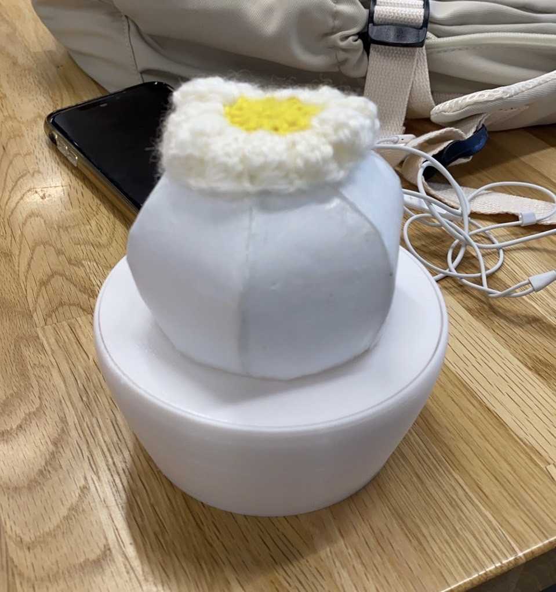

プロジェクトマネジメント
（テーマ）
目に見えない物を視覚化する
（スケジュール）
6/6 テーマ・デザイン決め 6/13 必要な物の注文・プログラミング開始 6/20 実際に試す
7/4 完成 7/11 プレゼン作り 7/18 発表
（役割）
プログラミング：東原芹菜・高山幸太
デザイン：坂根章介・孫暁涵・常定光希
（構想）
心拍に合わせて光を変化させるもの
心拍を登録した人の心拍に合わせることができるため
自分以外の人の存在も感じることが可能
プロトタイプ

(作品名)
サボテン
（コンセプトメッセージ）
コロナ渦で心身ともに疲弊していた世の中。ココロはネガティブに、交流は希薄になりつつあります。
本来人は生命力の強さと愛情の柔らかさを持ち合わせていたはずです。
自身の「生」のリズムを共鳴させたサボテンの光で、ココロをリセットしてください。
反省
（グループ）
速く取り掛からなかったことで、完成がすごくギリギリになってしまった
グループメンバーとの認識の違いが生じ、無駄な作業が生まれてしまった
（自分）
先生に頼りすぎたと感じている
自分の仕事を時間に余裕をもって進めるべきであった
発表
濃厚接触者となり、オンライン参加となった
発表にも参加したかったが、会場にいるメンバーに参加させることができないといわれたので
聞くだけという形になってしまった